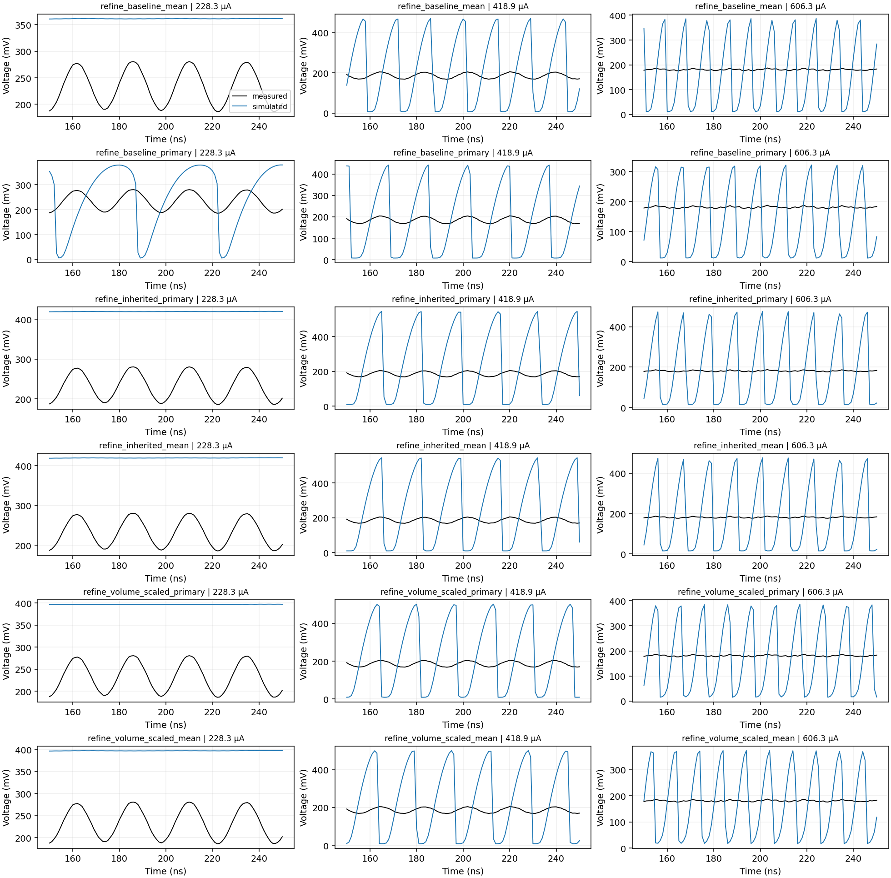
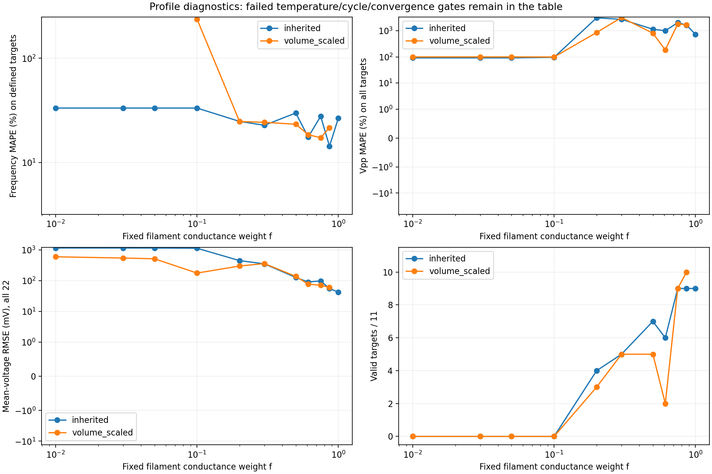

No candidate recovered a quantitative, converged match. The job completed 21,232 stage-unique evaluations in 7.06 hours, including both thermal assumptions, all planned checks and long controls. No calibration is adopted. This does not rule out a filament.
Full reviewed report · Final comparisons · Integrity audit · Original plan · Included and omitted evidence
Finest timestep: 0.003125 ns. Valid means sustained target checks passed; Defined is the frequency-error denominator. Frequency errors use defined targets, Vpp errors all 11 targets, and mean-voltage error all 22 records. Outside-T counts are out of 22. Feature and waveform counts cover 22 comparisons (11 targets × two halvings).
| Family | f | Objective | Valid | Defined | Frequency_MAPE | Vpp_MAPE | Mean_RMSE | Outside_T | Feature_pairs | Waveform_pairs |
|---|---|---|---|---|---|---|---|---|---|---|
| Inherited | 1 | Frequency + Vpp | 10/11 | 10/11 | 16.59% | 1437.3% | 35.52 mV | 0/22 | 17/22 | 0/22 |
| Inherited | 1 | + mean voltage | 9/11 | 10/11 | 35.17% | 1582.7% | 46.24 mV | 0/22 | 17/22 | 2/22 |
| Inherited | 0.75 | Frequency + Vpp | 10/11 | 10/11 | 19.80% | 1898.5% | 69.64 mV | 4/22 | 12/22 | 2/22 |
| Inherited | 0.75 | + mean voltage | 10/11 | 10/11 | 19.80% | 1898.5% | 69.64 mV | 4/22 | 12/22 | 2/22 |
| Scaled thermal volume | 0.866025 | Frequency + Vpp | 10/11 | 10/11 | 22.89% | 1677.2% | 60.48 mV | 0/22 | 15/22 | 2/22 |
| Scaled thermal volume | 0.866025 | + mean voltage | 10/11 | 10/11 | 24.42% | 1655.8% | 60.75 mV | 0/22 | 14/22 | 2/22 |
All six fail the joint long-control test. Smaller fractions and the mean-aware attempts did not solve the discrepancy. Very small-f candidates can appear to reduce amplitude error by losing oscillations; missing cycles remain failures, not zero error.
Black: measured. Blue: simulated. Every final candidate is shown at low/mid/high measured currents; all 22 waveforms are linked below.


| family | fraction | passing_targets | defined_frequencies | frequency_MAPE_percent | amplitude_MAPE_percent | mean_voltage_RMSE_mV | outside_temperature_records | inadmissible_proximity_records |
|---|---|---|---|---|---|---|---|---|
| inherited | 0.6124 | 6 | 6 | 17.57 | 1007 | 90.04 | 3 | 0 |
| inherited | 0.866 | 9 | 9 | 14.35 | 1658 | 54.92 | 1 | 0 |
| volume_scaled | 0.6124 | 2 | 3 | 18.5 | 184.9 | 76.77 | 2 | 0 |
| volume_scaled | 0.866 | 10 | 10 | 21.62 | 1684 | 59.98 | 0 | 0 |
| inherited | 1 | 9 | 9 | 26.59 | 735.9 | 42.33 | 0 | 0 |
| inherited | 0.01 | 0 | 1 | 33.33 | 91.9 | 1148 | 0 | 0 |
| inherited | 0.03 | 0 | 1 | 33.33 | 91.9 | 1147 | 0 | 0 |
| inherited | 0.1 | 0 | 1 | 33.33 | 96.47 | 1128 | 0 | 0 |
| inherited | 0.2 | 4 | 4 | 24.82 | 3149 | 447.7 | 2 | 0 |
| inherited | 0.5 | 7 | 7 | 29.87 | 1155 | 126.5 | 0 | 0 |
| inherited | 0.75 | 9 | 9 | 27.79 | 2072 | 97.89 | 0 | 0 |
| volume_scaled | 0.01 | 0 | 0 | undefined | 100 | 595.6 | 6 | 0 |
| volume_scaled | 0.03 | 0 | 0 | undefined | 100 | 542.1 | 6 | 0 |
| volume_scaled | 0.05 | 0 | 0 | undefined | 100 | 512.7 | 6 | 0 |
| volume_scaled | 0.1 | 0 | 2 | 237.5 | 99.38 | 175.6 | 2 | 0 |
| volume_scaled | 0.2 | 3 | 3 | 24.79 | 863.4 | 298.6 | 5 | 0 |
| volume_scaled | 0.3 | 5 | 5 | 24.32 | 3226 | 358 | 4 | 0 |
| inherited | 0.05 | 0 | 1 | 33.33 | 91.91 | 1144 | 0 | 0 |
| inherited | 0.3 | 5 | 5 | 22.79 | 2763 | 350.5 | 0 | 0 |
| volume_scaled | 0.5 | 5 | 5 | 23.31 | 813.6 | 137.1 | 0 | 0 |
| volume_scaled | 0.75 | 9 | 9 | 17.31 | 1847 | 70.75 | 2 | 0 |
At 2 µs, the high-current control (~569.55 µA) leaves the calibrated temperature domain for every final candidate and timestep. Only the primary f=1 candidate retains sustained low-current oscillations (~228.28 µA). None passes all three currents.
| stage | current_uA | sustained_all_steps | physical_all_steps | features_converged | frequency_MHz_maximum_halving_change | robust_vpp_mV_maximum_halving_change | passing |
|---|---|---|---|---|---|---|---|
| control_refine_baseline_mean | 228.28 | False | True | False | undefined | undefined | False |
| control_refine_baseline_mean | 418.86 | True | True | True | 0.0098678 | 0.0012635 | True |
| control_refine_baseline_mean | 569.55 | True | False | True | 0.012576 | 0.0040743 | False |
| control_refine_baseline_primary | 228.28 | True | True | True | 0.0012389 | 0.00068448 | True |
| control_refine_baseline_primary | 418.86 | True | True | True | 0.00928 | 0.0011592 | True |
| control_refine_baseline_primary | 569.55 | True | False | True | 0.01104 | 0.0044136 | False |
| control_refine_inherited_mean | 228.28 | False | True | False | undefined | undefined | False |
| control_refine_inherited_mean | 418.86 | True | True | True | 0.0084282 | 0.012587 | True |
| control_refine_inherited_mean | 569.55 | True | False | True | 0.011984 | 0.0022184 | False |
| control_refine_inherited_primary | 228.28 | False | True | False | undefined | undefined | False |
| control_refine_inherited_primary | 418.86 | True | True | True | 0.0084282 | 0.012587 | True |
| control_refine_inherited_primary | 569.55 | True | False | True | 0.011984 | 0.0022184 | False |
| control_refine_volume_scaled_mean | 228.28 | False | True | False | undefined | undefined | False |
| control_refine_volume_scaled_mean | 418.86 | True | True | True | 0.0082563 | 0.0012414 | True |
| control_refine_volume_scaled_mean | 569.55 | True | False | True | 0.010355 | 0.0046202 | False |
| control_refine_volume_scaled_primary | 228.28 | False | True | False | undefined | undefined | False |
| control_refine_volume_scaled_primary | 418.86 | True | True | True | 0.0085472 | 0.00085394 | True |
| control_refine_volume_scaled_primary | 569.55 | True | False | True | 0.010253 | 0.0046818 | False |
Confirm channel conversion, gain, offsets, delay and probe nodes with a known-resistor control. Audit timestep/hysteresis fidelity on fixed representative vectors before another fit. If independent evidence supports surrounding-film warming, consider a constrained two-temperature model. An arbitrary varying fraction would add freedom without resolving the current uncertainty.
All 94 frozen input/source files and 76 stage inventories pass hash checks. All 132 native finest-step histories reproduce the saved final features and preserve branch-current/power identities within 2.60×10⁻⁷ relative error. A post-processing NaN issue erased partial diagnostics in the original summary. Corrected diagnostics preserve both selected refinement seeds and every acceptance decision; original files remain unchanged. See the report for details.
Three currents were initially excluded from optimization but seen historically. Final fits use all 11 targets; this is not blind validation. No accepted all-target loss or inferred physical area fraction is established.
The full ~964 MB numerical run remains local. This compact archive omits large native arrays and histories; their hashes and exclusion flags are recorded. Those omitted bytes are not backed up on GitHub.
Audited profile/final table · Long controls · Native audit · Named parameters · Current split · Original generated report